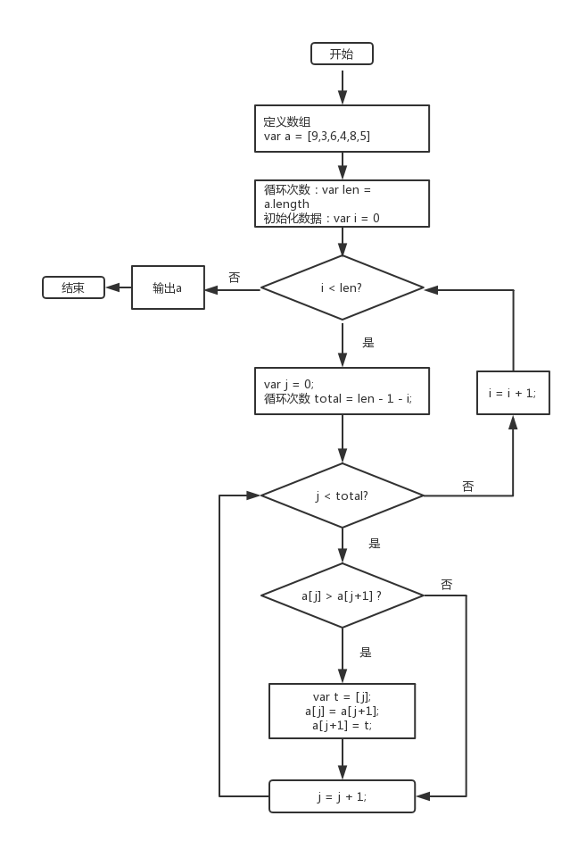
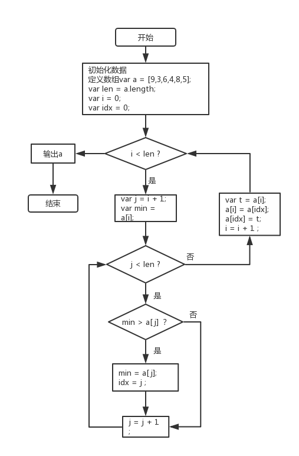
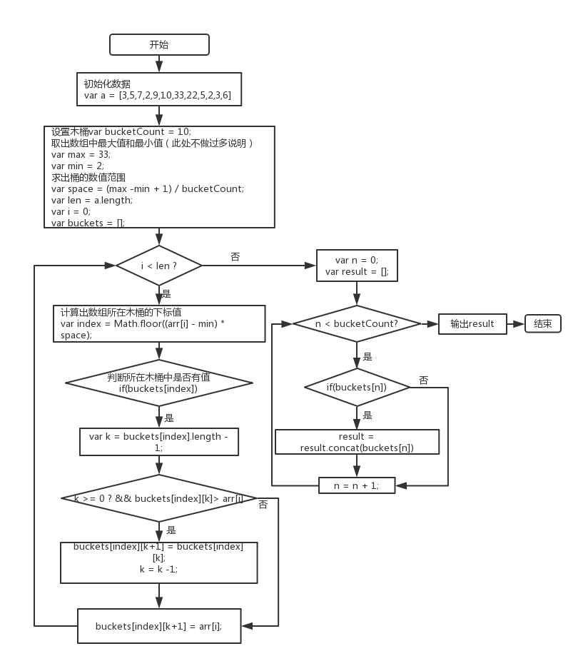

介绍一些简单的算法、排序及流程图。
一、伪代码
1）结构化编程
官方定义,综合来说，满足以下三个条件一般是为结构化编程：
- 语句一行一行执行
- 有条件控制语句 if…else…
- 有循环控制语句while(exp) do…
2）伪代码
伪代码的特点是不用纠结于语法的细节，语法是自己定的，其次可以体会语言设计者的想法，语法是自己定的。举例如下：
- a <- 1 //表示将1拷贝给a
条件控制语句：
1
2
3
4
5
6
7if xxx
1
elseif yyy
2
else
3
end循环语句：
1
2
3
4
5n = 0
while n < 10
print n
n <- n+1
endlength表示一个容器，’length’表示字符串，length <- ‘length’表示将字符串放到容器中，举例：
1
2
3
4
5
6
7
8a <- {
'0' : 12,
'1' : 22,
'2' : 8,
'3' : 3,
'4' : 24,
'length' : 5
}
二、排序算法分类
算法主要具有一下特征：
- 输入：一个算法必须有零个或以上输入量。
- 输出：一个算法应有一个或以上输出量，输出量是算法计算的结果。
- 明确性：算法的描述必须无歧义，以保证算法的实际执行结果是精确地匹配要求或期望，通常要求实际运行结果是确定的。
- 有限性：依据图灵的定义，一个算法是能够被任何图灵完备系统模拟的一串运算，而图灵机只有有限个状态、有限个输入符号和有限个转移函数（指令）。而一些定义更规定算法必须在有限个步骤内完成任务。
- 有效性：又称可行性。能够实现，算法中描述的操作都是可以通过已经实现的基本运算执行有限次来实现。
数据结构就是数据的机构，出现数据结构主要是因为：
- 我们要解决一个跟数据相关的问题
- 分析这个问题，想出对应的数据结构
- 分析数据结构，想出算法
数据结构和算法相互依存，不可分割。学习完排序算法就能了解常见的数据结构。
算法的主要分类为：
- 分治法：把一个问题分区成相互独立的多个部分分别来求解的思路。这种求解思路带来的好处之一就是便于进行并行计算。简而言之就是分而治之。
- 动态规划法： 当问题的整体最优解就是由局部最优解组成的时候，经常采用的一种方法。
- 贪婪算法：常见的近似求解思路。当问题的整体最优解不是（或无法证明是）由局部最优解组成，且对解的最有型没有要求时，可采用的一种方法。
- 线性规划法
- 简并法： 把一个问题通过逻辑或者数学推理、简化成与之等价或近似的、相对简单的模型，进而求解的方法。
三、常见排序算法介绍
以下均是按照升序进行排列：
1）冒泡排序
流程图如下：

冒泡排序的思路是两两对比，如果后面的值大于前面的值，则两个互换位置。
2）选择排序
流程图如下：

选择排序的思路是找出数组的最小值，将其与下标为0的值互换，然后从第二位开始，找出从第二位开始到数组最后一个值中最小的，将此时的最小值与数组第二个值的位置互换，以此类推。
3）快速排序
4）随机快速排序
5)木桶排序

木桶排序的思路首先设置本次排序有几个木桶bucketCount和这个数组的取值区间，即（最大值-最小值），并计算出每个取值区间的步长step=(max -min) / bucketCount。根据数组元素值的大小将数组分配到不同的木桶中，并且在放置的过程中确保放置进木桶的数组元素按照升序排列。整理完成后将木桶中数组连接起来即可得到排序好的数组。
排序可视化可参考这个网站查看。